HireStream
Applicant User Guide
- Portal
- HireStream — HPSEDC Overseas Placement Portal
- For
- Candidates seeking overseas employment through HPSEDC
- Release
- HireStream Lite v1.0.0
- Issued
- 17 October 2026
1.Welcome to HireStream
HireStream is the official overseas placement portal of HPSEDC (Himachal Pradesh State Electronics Development Corporation), Government of Himachal Pradesh. Through it you can register once, apply for verified overseas jobs, attend interviews, and get ready to travel — safely and legally.
How the process works
Every application goes through four stages:
- Applied — you have applied for a job. HPSEDC reviews it.
- Interview — HPSEDC interviews every applicant. You confirm the date or ask to change it.
- Selected — you passed the interview. Only now do you upload documents (police clearance, medical and so on).
- Placed — you have accepted the offer. HPSEDC helps you with visa and travel, and keeps in touch after you start work.
What you need
- A mobile phone or computer with internet. The portal works on phones.
- An email address you can open — a 6-digit code is sent there before you can apply.
- Your passport (if you have one) and your Aadhaar card, to copy the details exactly.
- Details of your education and your work experience.
Filling in the application takes about five minutes. Your answers are saved on every page, so you can stop and come back later.
2.Create your account
- Open the HireStream portal in your browser. The sign-in page opens.
- To use the portal in Hindi, click the हिं button at the top. Click EN to return to English. You can switch at any time.
- Click the Create Account tab.
- Enter your Full Name, your Email Address, and a Password. The password must have at least 8 characters, including a capital letter, a small letter, a number and a symbol (for example
Rajesh@2026). Type it again in Confirm Password. - Click Create Account. You are signed in and the application form opens.
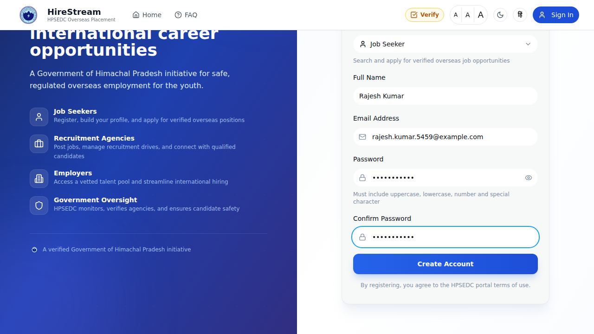
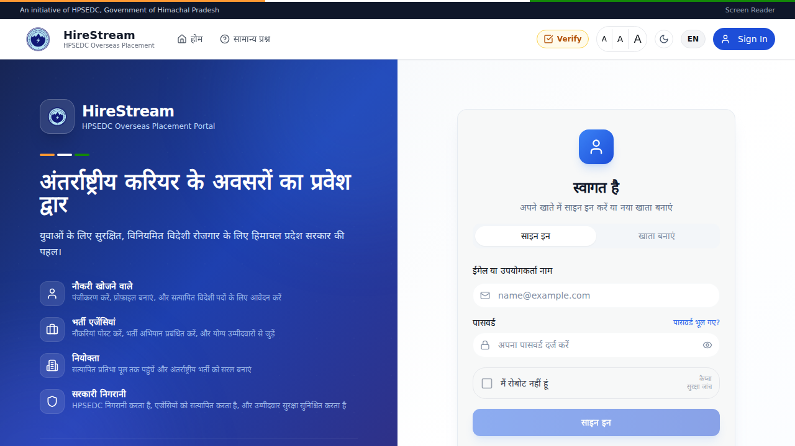
Signing in next time
On the Sign In tab, enter your email address or username and your password, tick I'm not a robot, and click Sign In.
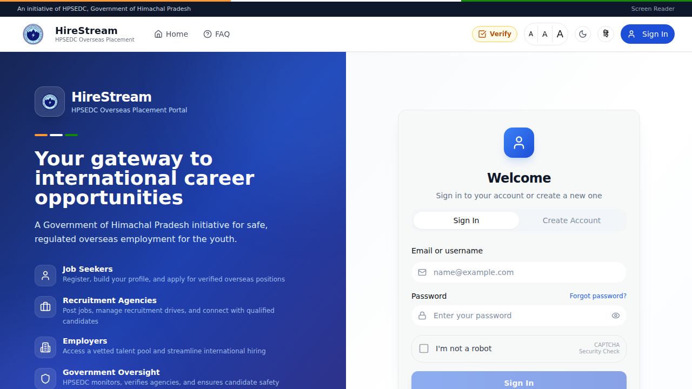
3.Fill in your application
The application form has four pages. The bar at the top shows each page and how much of it is complete, the overall percentage, and the time spent. On a computer, the menu on the left lets you go back to an earlier page and has quick help links.
When you start, a Before you start box reminds you what to keep ready. Click I have these — start.
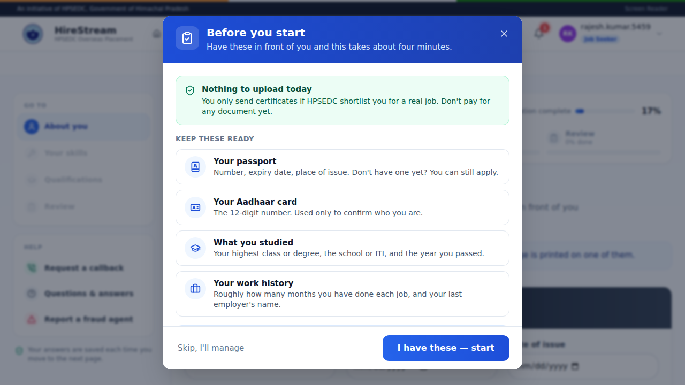
Fields marked with a blue * must be filled in. Click Next at the bottom of each page — your answers are saved each time.
Page 1 — About you
Keep your passport and Aadhaar card in front of you. Copy every detail exactly as printed.
| Section | What to enter |
|---|---|
| 1. Identity documents | Passport number, date of expiry, date of issue, place of issue, and your ECR / ECNR status (look on your passport: does it say "Emigration Check Required"?). Your Aadhaar number is checked as you type — if a digit is wrong you will see a message. No passport yet? Tick I don't have a passport yet. You can still apply, but you will need a passport before you can be selected. |
| 2. Personal details | Full name (as on your passport), date of birth (you must be 18 or older), gender, father's name, mother's name, and whether you have a disability. |
| 3. Contact | Mobile number (choose the country code first — useful if you are already working abroad), WhatsApp number (tick Same as mobile number if it is the same), and email. |
| 4. Address | Home town, permanent address, state, district and 6-digit PIN code. If your address for letters is different, untick My correspondence address is the same… and enter it. |
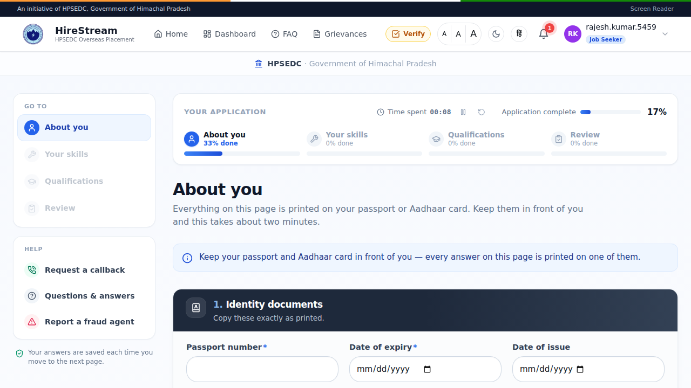
Page 2 — Your skills
- Click the trades you can actually do — for example Driver, Electrician or Nurse. You can choose up to 3. If your work is not listed, choose Other and type what your work is called.
- Under Languages, click each language you speak (Hindi, English, Urdu, Arabic). For each one, choose how well you speak and write it. For another language, type it in the box and click Add.
You must choose at least one trade and one language to continue.
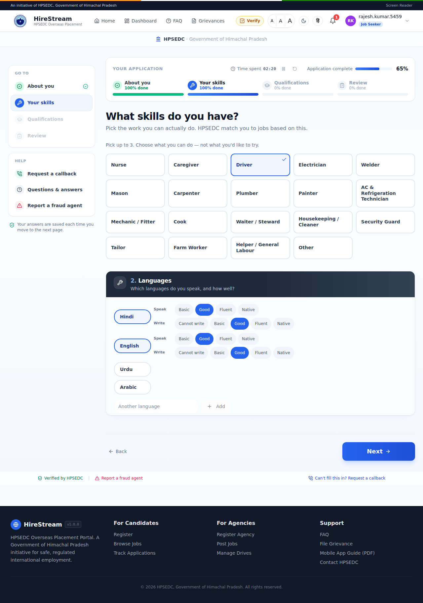
Page 3 — Qualifications and experience
- Education — choose your highest qualification. For 5th to 12th class choose your Board (for example HPBOSE). For ITI, diploma or degree choose your University / College. If yours is not in the list, choose Other (type it in). Add the school or institution and year of passing if you wish.
- One card for each trade you chose. Some trades ask extra questions:
- Driver — licence number, licence class, valid until, badge / PSV licence, driving abroad.
- Nurse — nursing qualification, college, year, Nursing Council registration number and council.
- Caregiver — training certificate and institution.
- Electrician, Welder — trade qualification, ITI name, year, certificate body or trade test.
- Months of experience — use the + and − buttons (6 months at a time) or type the number.
- What specifically can you do? — tap the skills you have. This helps match you to the right job.
- Last employer and country — optional.
You will be asked to prove these details with certificates only if you are selected.
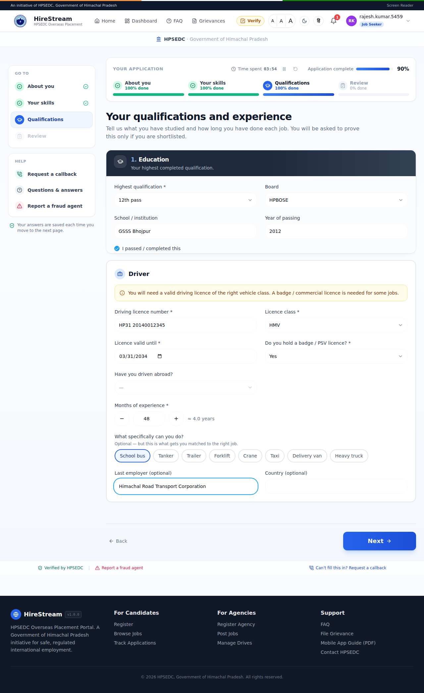
Page 4 — Check and submit
Page 4 shows your whole application in four sections. Read it carefully. Click Edit on any section to correct it. Your Aadhaar number is shown masked (only the last 4 digits).
- Print / Save PDF prints the application as an A4 form, or saves it as a PDF for your records.
- When everything is correct, click Submit application. You will see the message "Application submitted".
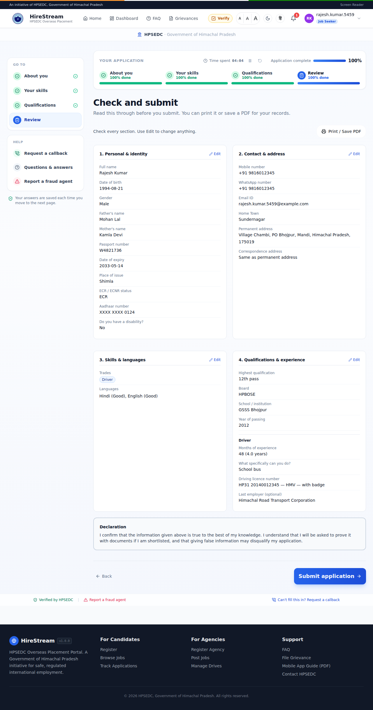
4.Your dashboard
After submitting, open your Dashboard. It shows:
- Your HPSEDC registration number (for example HP-948651). Quote it whenever you call HPSEDC.
- Profile completion and buttons to Find a Job or Edit my details.
- My application — the status of your most important application.
- Your travel readiness — what is still needed before you can travel.
- Need help? Ask HPSEDC and the warning about money.
The menu on the left has My Home, Find a Job, My Application and My Documents. A red dot on My Documents means documents are needed. Switch to Full dashboard shows a more detailed view (saved jobs, recruitment drives, your journey and more); you can switch back to the Simple view at any time.
Confirm your email address
Before you can apply for any job you must confirm your email. HPSEDC sends a 6-digit code to your email when you create your account.
- Open your email and find the message from HireStream with the code. Check the spam folder too.
- On your dashboard, type the code into the 6-digit code box under Confirm your email address.
- Click Confirm. You will see "Email confirmed — You can apply for jobs now".
The code is valid for 5 minutes. If it has expired, click Send a new code.
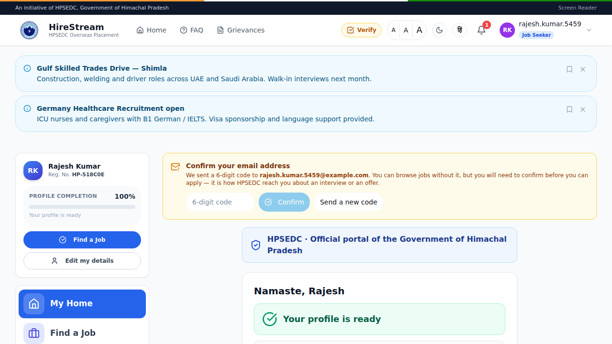
5.Find a job and apply
- Click Find a Job. All open HPSEDC vacancies are listed. Jobs that are already filled are not shown.
- Search by job title, company or skill, or use the filters: Country, Category, Experience, Salary. Sort by Best Match, Newest or salary.
- Each job shows the employer, country, monthly salary and a match percentage — how well it fits your profile. Click the bookmark icon to save a job for later.
- Click a job to read the details on the right: description, requirements, required skills, and the documents you would need if selected.
- Click Apply Now (or Apply now on the job card).
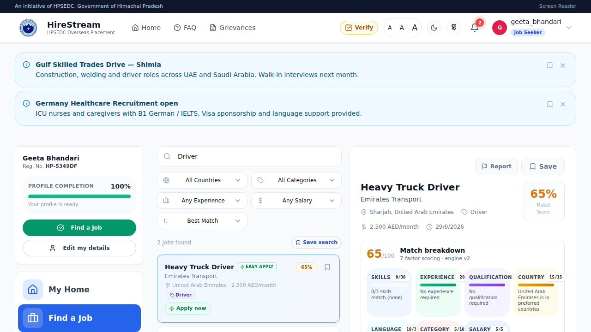
Your application now appears under My Application. Click it to see its stage (Submitted → Interview → Selected → Placed), your match score and the date you applied.
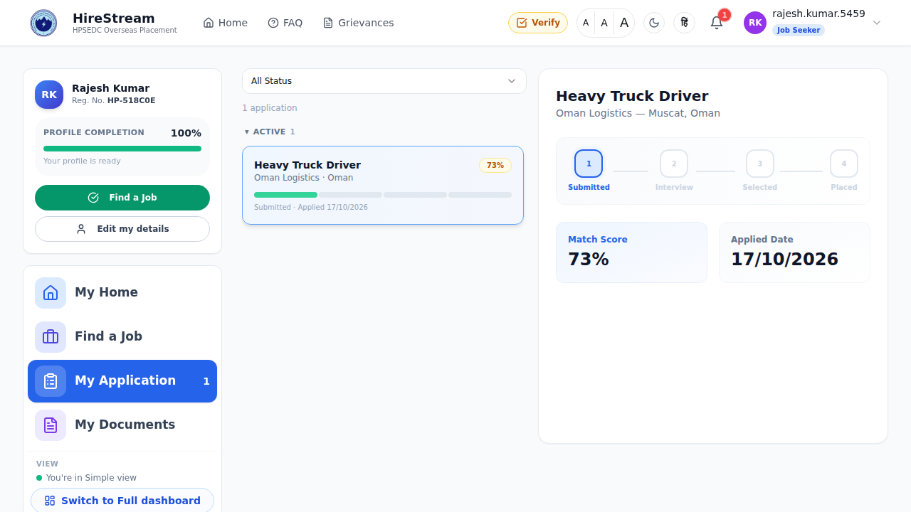
6.Your interview
HPSEDC interviews every applicant. When your interview is arranged you receive a notification, and the application shows Interview scheduled with the date, time and place — or a meeting link for an online interview — and the interviewer's name.
Open My Application and click the application. Then:
- Confirm attendance — tell HPSEDC you will come. Please always do this.
- Reschedule — if the time does not suit you, give a reason and (optionally) a preferred time. HPSEDC will accept your time, set a new one, or keep the original, and you will be told.
- Decline — if you no longer want this job. A reason is required.
- Add to calendar (.ics) — saves the interview in your phone or computer calendar.
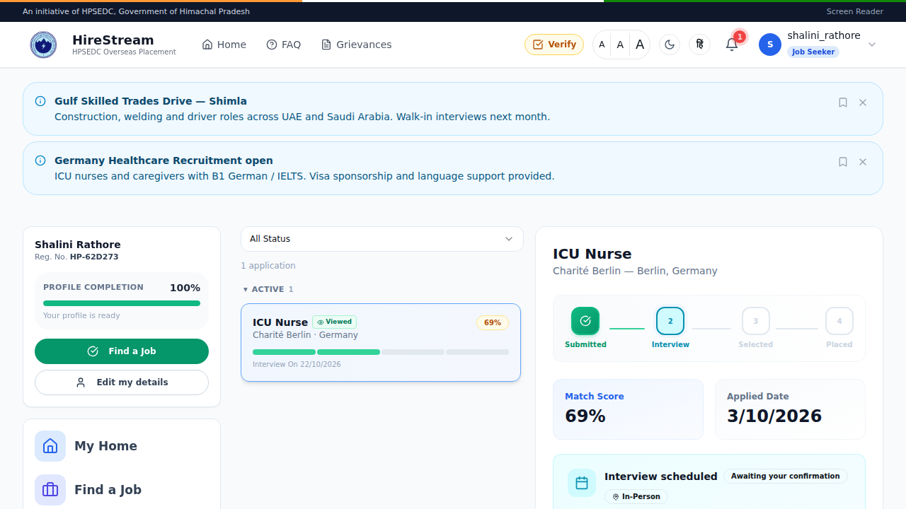
7.If you are selected
Congratulations! When HPSEDC select you after the interview:
- Your application moves to Selected and you are notified.
- Your dashboard shows Documents needed before you travel, with each document marked Needed or Received.
- The application form gains two more pages: Documents and Compliance (Before you travel).
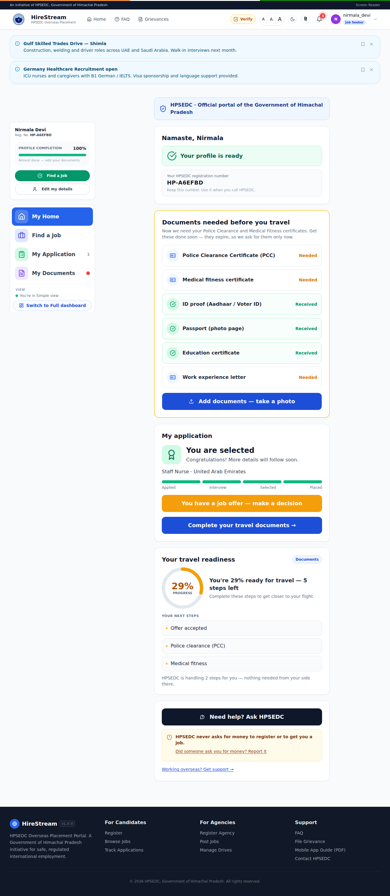
Upload your documents (page 5)
Click Complete your travel documents → (or Add documents — take a photo). Page 5, Your documents, lists everything needed for each job you were selected for, and why. Usually:
| Document | Why it is asked |
|---|---|
| Police Clearance Certificate (PCC), Medical fitness certificate | Needed before you travel |
| ID proof (Aadhaar / Voter ID), Passport (photo page), Education certificate, Work experience letter | Needed for every overseas job |
| Trade documents — e.g. nursing certificate and Nursing Council registration, driving licence, ITI certificate | Required for your trade |
| Country documents — e.g. trade test (Saudi Arabia), IELTS and CV (UK, Canada, Australia…) | Required by the destination country |
- Click Upload next to a document.
- Choose a clear photo or scan — PDF, JPG or PNG, up to 5 MB. On a phone you can take a photo directly.
- The row changes to "Uploaded — HPSEDC are checking it". When HPSEDC accept it, it shows "HPSEDC have checked and accepted this".
- To send a clearer copy, click Replace. Replacing a document that was already accepted sends it back for checking.
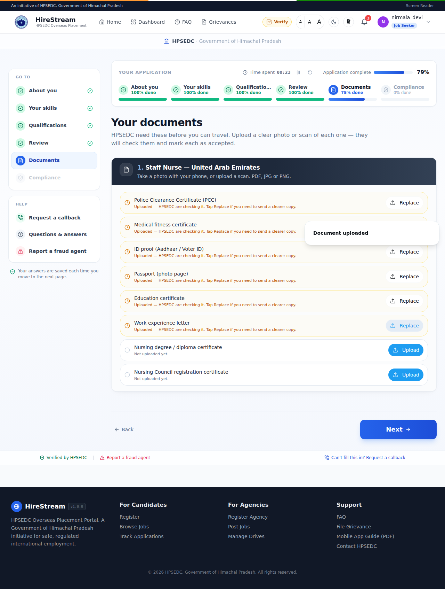
Before you travel (page 6)
Tell HPSEDC how far you have got with the steps required under the Emigration Act. HPSEDC confirm each one when it is done.
- Police Clearance Certificate — Applied for it or Submitted to HPSEDC.
- Medical fitness test — Booked / done. The clinic sends the result to HPSEDC.
- PBBY insurance (Pravasi Bharatiya Bima Yojana — mandatory for ECR emigrants) — Applied for it, and the policy number.
- Pre-departure orientation — recorded by HPSEDC after you attend.
Click Save my progress. Values marked "recorded by HPSEDC" have been confirmed by HPSEDC and cannot be changed by you.
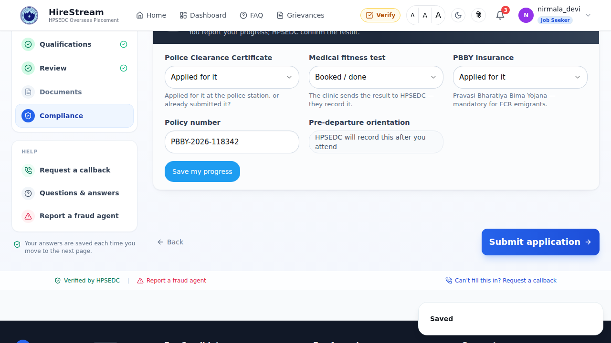
8.Your offer
When HPSEDC upload your signed appointment letter, your offer is ready. Your dashboard shows You have a job offer — make a decision.
- Click it, then click the job in My Application.
- The Offer received box shows the salary, start date and country. Click View / print offer letter (PDF) and read it carefully.
- Click Accept Offer to accept. Or click Decline and give a reason.
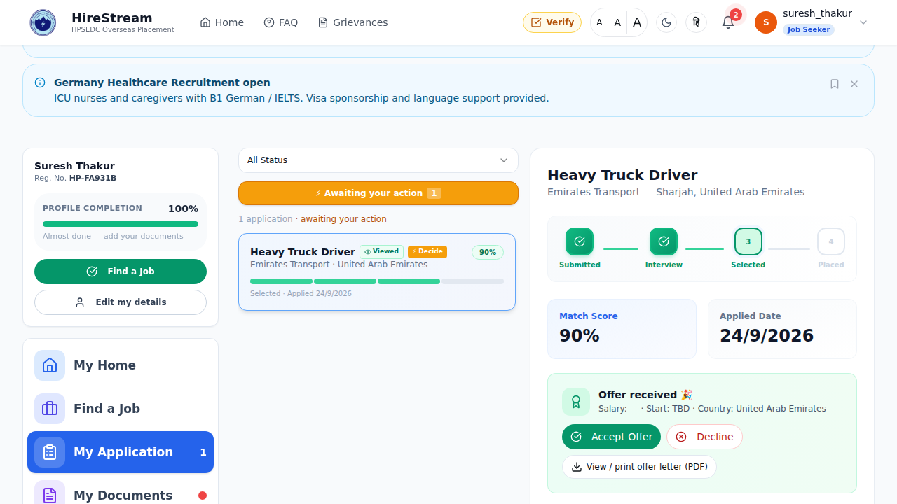
Once you accept, your application becomes Placed. Your dashboard then tracks the remaining pre-departure steps — visa, orientation, insurance and travel — and HPSEDC will tell you about every change in your visa status.
After you start work abroad
HPSEDC stay in touch. At about 30, 60 and 90 days after you start, HPSEDC will check on your welfare. You can also open Working overseas? Get support → on your dashboard to send a monthly check-in (I'm fine / I need help) or report a problem — salary not paid, contract different from what was promised, safety or harassment, health, passport or documents held, or anything else.
9.Help, messages and complaints
Ask HPSEDC
Click Need help? Ask HPSEDC or Send a Message on your dashboard. The Help page has common questions, the HPSEDC helpline, and a message box. Type your question and send it. This is not a live chat — HPSEDC reply during working hours, and a red number shows when there is a new reply.
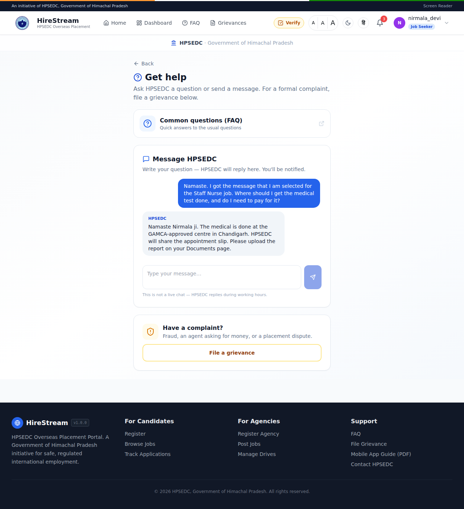
Grievances (formal complaints)
For a formal complaint, click Grievances at the top, then New Grievance. Choose a category, write a short subject and describe what happened, then click Submit Grievance. Categories include:
- Someone asked me for money / Fraud
- Problem at my workplace abroad (unpaid, passport held, unsafe)
- Problem with my recruitment or placement
- Application issue · Technical problem · Question about the scheme / policy · Other
You can follow each grievance on the same page. When HPSEDC have acted, you can mark it Resolved, or Reopen it if the problem is not solved.
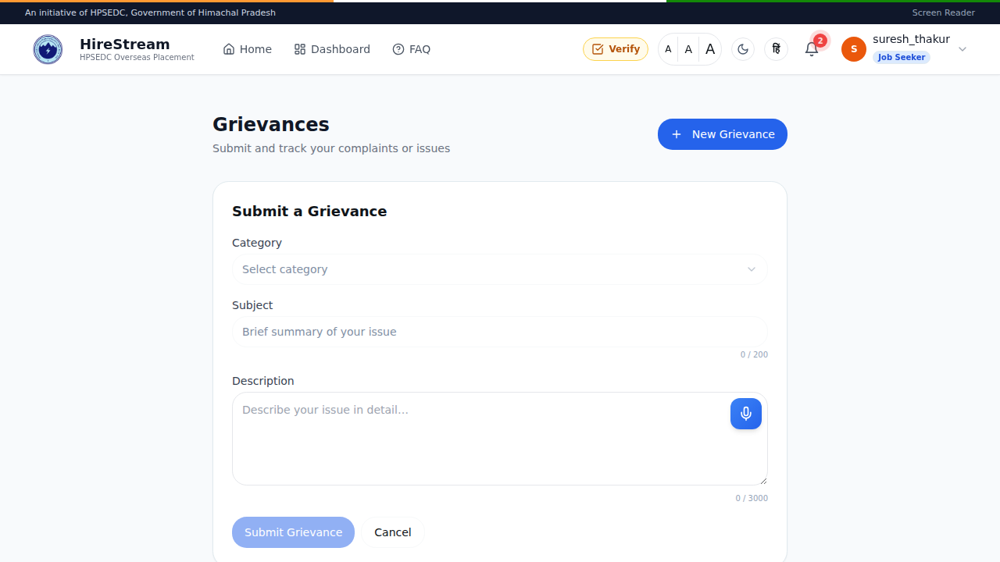
Notifications
The bell icon at the top shows your notifications — application received, interview scheduled, selected, documents needed, offer available, visa updates and more. Some important notifications, such as selection, are also sent by email.
Other settings
- Change password — click your name at the top right, then Change Password.
- Text size and dark mode — use the A A A buttons and the moon icon at the top.
- Sign out — click your name at the top right, then Sign Out. Always sign out on a shared computer or in a cyber café.
10.Frequently asked questions
| Question | Answer |
|---|---|
| Do I have to pay anything? | No. Registration, applying and selection through HPSEDC are free. Report anyone who asks for money. |
| I don't have a passport. Can I register? | Yes. Tick "I don't have a passport yet" on page 1. You will need a passport before you can be selected. |
| Do I need to upload certificates to apply? | No. Documents are requested only after you are selected for a job. |
| How many trades can I choose? | Up to 3. Choose only work you can actually do. |
| I did not get the email code. | Check spam, wait a minute, then click "Send a new code". Make sure the email address in your profile is correct. |
| Can I change my details after submitting? | Yes — use "Edit my details". Details from documents HPSEDC have already checked (e.g. passport) are locked; upload a new document to change them. |
| How will I know about my interview? | You get a notification and an email, and it appears in My Application. Please confirm attendance. |
| What is ECR / ECNR? | "Emigration Check Required" or "Not Required", printed on your passport. ECR passport holders need emigration clearance for certain countries; HPSEDC handle this with you. |